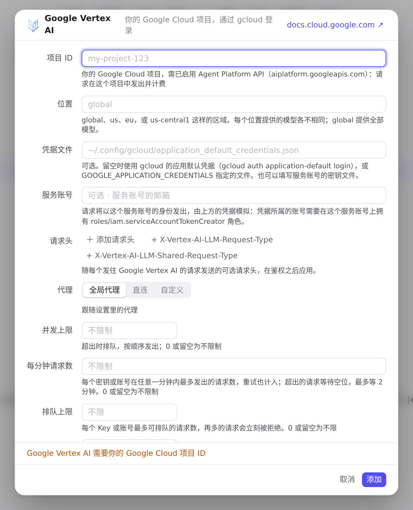
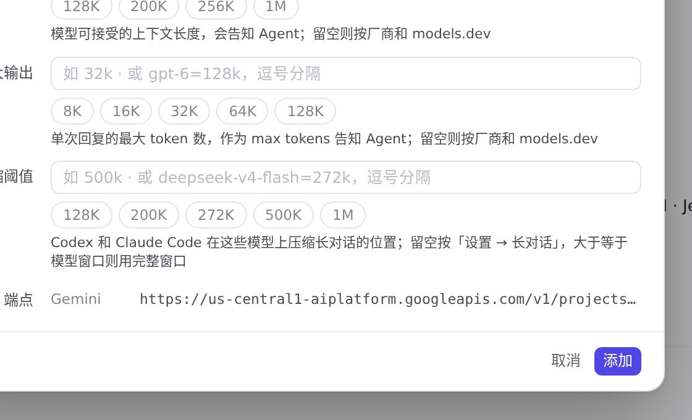
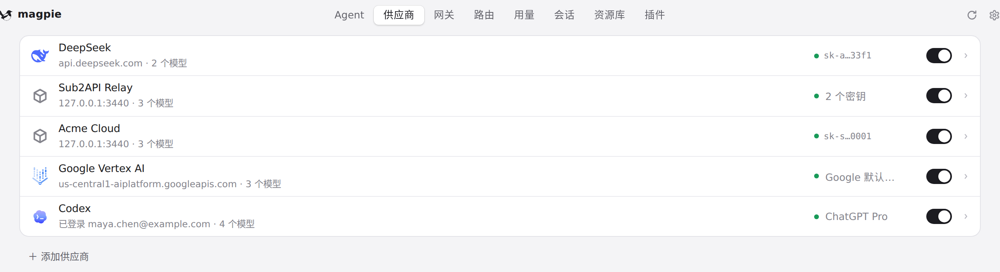
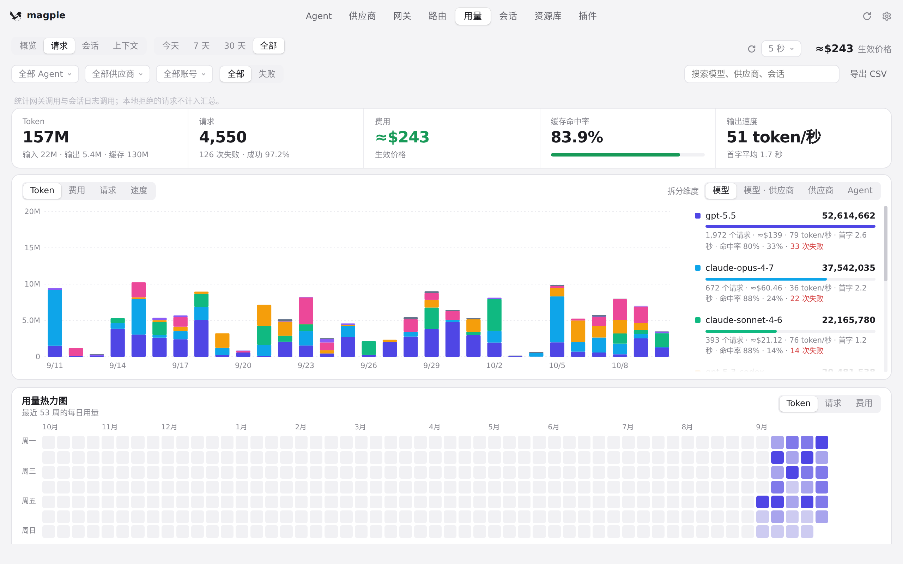

#1122 界面预览
commit 854c3f6 · 回到 PR · diff 给 GUI 加了 Google Vertex AI 预设：添加/编辑这种供应商时，编辑器用「项目 ID、位置、凭据文件、服务账号」代替 API 密钥，端点一栏随项目与位置实时拼出地址，供应商行右侧显示签名用的凭据（服务账号、凭据文件名或 Google ADC，缺项目时说「需要项目」）；另外「请求」列表按路径判断协议时，generateContent 不再区分大小写。
红线是鼠标走过的轨迹，红色圆环是一次点击；底部文字是这一步在做什么。空格暂停，← → 逐段查看。
 添加一个 Google Vertex AI 供应商 · Google Vertex AI 的编辑器：项目 ID、位置、凭据文件、服务账号，没有 API 密钥栏
添加一个 Google Vertex AI 供应商 · Google Vertex AI 的编辑器：项目 ID、位置、凭据文件、服务账号，没有 API 密钥栏

添加一个 Google Vertex AI 供应商 · 项目 ID 为空时点「添加」后的编辑器
添加一个 Google Vertex AI 供应商 · 填了项目 ID 后，端点一栏的样子

添加一个 Google Vertex AI 供应商 · 位置改成 us-central1 后，端点一栏的样子

添加一个 Google Vertex AI 供应商 · 供应商列表里多出的这一行及其右侧的凭据标签

「请求」列表里的协议标签 · 「请求」列表：每条请求的协议列